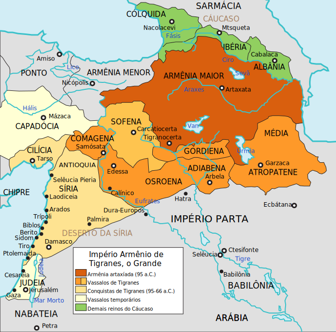

看到一张素材「罗马神圣帝国」：
其中描述的架空时间线和最终势力范围划分比较接近《设定集》时代背景。
简单说，由于要把「波兰王位继承战争」掺和进来，于是「萨克森选帝侯兼任波兰国王」这个背景的时间点就应该塞进时间轴当中。其实第十三篇《雷霆雨露皆是君恩》当中已经用「罗刹人在德累斯顿混出头来就到波兰当官」剧透了，其中勇者「苏季比宁」的原型，不仅仅是讽刺吟游诗人划时代大作《假王储》钦定主角龙傲天，还挪用了现任罗刹大统领普京当年作为大手情报机构职员在德累斯顿从事地下工作五年的经历。
而架空中本位面没有发生的「奥匈战争」的导火索「萨拉热窝事件」导致匈牙利另立国王不认哈布斯堡，应该与蒂罗尔贵种在巴尔干与盎格鲁大手金融机构赞助的希伯来毒贩所经营的情报网络搭上线有关。而围绕着「莫斯塔尔萨拉热窝银行」在波黑投资行动，「为阿波罗做伥的日本巫婆」也会极大充沛，因为阿波罗本来就是特洛伊阵营的保护神，随着奥特曼兲命昭昭之后推进到巴尔干顺理成章。
别的也都是顺理成章，无论是「勃兰登堡选帝侯兼任普鲁士国王」还是「波西米亚国王选帝侯乃奥地利国王兼匈牙利国王」这种大同小异的政治结构，都可以挪用本位面历史。再强调一遍，把奥地利提升为王国，是为了常设立法机构「三级会议」铺垫，前面注释当中提到了，设定为只有「王国」才有这种立法机构，大公国往下的领地就没有，一切由领主说了算。在第十四篇《食不厌精脍不厌细》当中则描述了没有领主的自由城邦当中「市委」「市政府」的存在，也是「三级会议」性质的常设机构。
因为本位面「帝国议会代表的王国与领地和圣施陶芬王冠领地」成立的时间点，欺下媚上的马扎尔人按闹分配已经成功了。所以在《设定集》当中，匈牙利有自己完整的党政军财四套班子可以「遥尊」哈布斯堡，捷克或曰波西米亚同样，而内莱塔尼亚德意志「自己人」倒是维也纳「宫廷」依靠一帮生活秘书分而治之的一盘散沙，这种情况不合理。因此需要一个类比英国内阁形成过程的官僚机构「朝廷」运用公务秘书「帮」或曰「替」下巴管理。
上网乱转发现国际一流和谐宜居之都「高学历精英社交圈」正在首页今日头条位置醒目应景推荐了一条意识形态含量甚为充沛的重要情报：
基督教的“东方教会”都是些怎样的教派？恐怕这次亚美尼亚和阿塞拜疆打起来之前，繁荣的简体中文互联网上充沛的人民群众都没意识到「基督教」不是铁板一块吧？在注释〔九〕当中已经提到了，哪怕是自诩「教徒」的家伙，也不知道应该听谁的话跟谁走。
比方说之前注释当中提到的九省通衢「网游版归正宗」发明人，在之江临安「原创文学论坛」宣扬「因信称义」的时候我猜它是路德宗，它没反驳；后来它开始自称「极端的加尔文主义者」，我问它啥时候跳槽的，它没回答；再后来它鼓吹的「教义」越来越奇葩，我问它难道你已经加入了太平天国么，帐号就被党性坚定的老审查员以「政治敏感」理由「亦当删去」。
后来转进国际一流和谐宜居之都「高学历精英社交圈」，在《知乎问答№009》当中已经备份了在之江临安「原创文学论坛」的部分关于基督教流派的发言，其中提到了「东方教会」相关内容。
简单说，在以弗所被开除出教的异端，就是现在的「东方亚述教会」包括但不限于东突大唐；在迦克墩被开除出教的异端，就是现在的「东方正统教会」包括但不限于亚美尼亚；而在1054年彻底谈崩了互相开除出教之后，「希腊民族神圣罗马帝国」的官方意识形态，就是现在的「东正教」。
也就是说，结合最近局势猜测，如果三洲通衢「五服四等人」钦定大目标已经被幕后黑手拍板签字当成大政方针勒令坚决贯彻落实到基层了，那么三洲通衢基督徒就会一扫而空，多半会移民欧罗巴充沛劳动力，与此同时欧罗巴全面排绿，无论是色目人还是马瓦力，从哪儿来回哪儿去。总之万恶的旧大陆之上各个阵营「自我净化」运动会轰轰烈烈的开展，百善の新世界本来就是移民国家，只有印第安土著才有资格放话「滚回欧罗巴亚细亚阿非利加去、美利坚不是你的家」。
在《异闻录》那边的题外话〔98〕当中已经深入揭批了美帝灯塔国「最高vtuber皮」辩论实况，因为与现实局势有关，但是与《设定集》年代之欧洲局势无关，所以不放在这边。
简单说，这边的局势与土耳其有关的内容，是「法土渎圣同盟」即将到期而「德土渎圣同盟」即将建立的过程，与本位面「中世纪晚期到一战」的历史走向一样，过程会尽量浓缩。这时候奥特曼还占了巴尔干一大片呢，遑论高加索，所以这边不会实时影射这些内容。
同理可证，美帝灯塔国大选对于《设定集》也没有实时影射的价值。不过作为素材还是可以挪用的，在前面注释〔106〕的最后「备份个素材」，各位读者之前都以为是什么伏笔吖？
在第十二篇《此心安处即是吾乡》当中伏笔就出现了：「好比说相声一样，有人负责出丑，有人负责吐糟」。
所以建议《设定集》的读者从这个角度回顾「最高vtuber皮」的精湛表演，周拜登负责出丑，党の川普负责吐糟，主持人则插科打诨嬉皮笑脸活跃气氛……真的是一段卓越的当代新编革命相声精品。
估计在娱乐至死的路线图下，下一场辩论当中除了「政治」之外还会有「性」出现，满足了喜剧的两大要素，各种内涵段子无聊图甩包袱层出不穷，充分满足了人民群众那日益增长的精神文化需求。
刚爬起来酒劲还在头昏脑胀，上网乱转没发现什么美国相声相关重要情报，那么帮或曰替这仨谐星脑补一段：
Biden : Do you mean “Make Armenia Great Again”① ?
Trump : Why not Azerbaijan ?
Biden : Were they great once ?
Trump : Em……Uh……MOGA !
Host : Are you Turkey President ?
Trump : Not me, US.
Biden : I see. Not Middle-East, Ural-Siberia.
未完待续
- ①